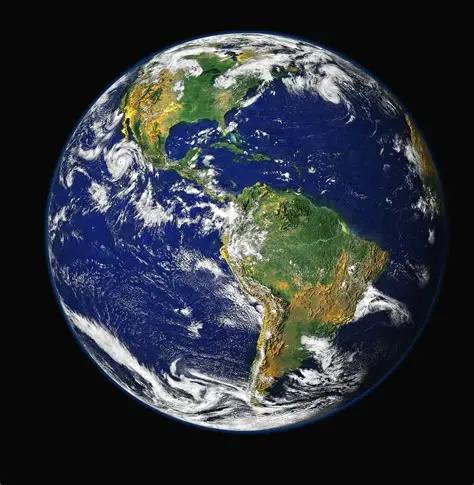
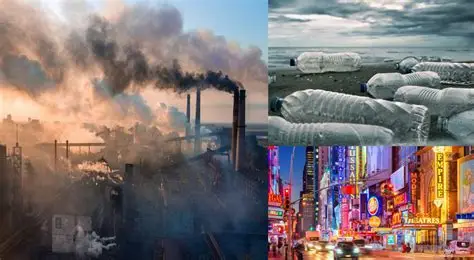
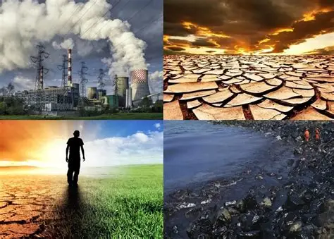
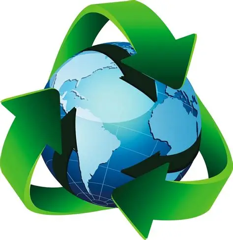

Un desafío ambiental para todo el planeta
El calentamiento global es el aumento gradual de la temperatura media de la Tierra. Este fenómeno ocurre principalmente debido al incremento de gases de efecto invernadero producidos por actividades humanas.
Estos gases atrapan el calor en la atmósfera, provocando cambios en el clima y afectando ecosistemas de todo el mundo.

Entre las principales causas se encuentran la quema de combustibles fósiles, la contaminación industrial, la deforestación y el uso excesivo de vehículos.

El calentamiento global provoca el derretimiento de glaciares, el aumento del nivel del mar, sequías, incendios forestales y fenómenos climáticos extremos.

Podemos ayudar reciclando, ahorrando energía, plantando árboles, utilizando energías renovables y reduciendo el uso de plásticos.
